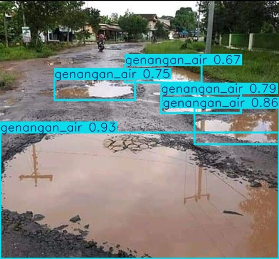

Deteksi Masalah Lingkungan dengan Vision AI
Sistem pelaporan cerdas yang mengubah foto warga menjadi data geospasial terstruktur menggunakan YOLOv8 dan LLM.

"Bali yang Lebih Baik,
Bersama
Kecerdasan Buatan"
"Teknologi bukan hadir untuk menggantikan tradisi, melainkan untuk melindunginya. Dengan BaliCivic AI, kita wujudkan pengawasan lingkungan yang transparan demi menjaga kelestarian dan harmoni Pulau Dewata."
Kenapa Bali Perlu Sistem Ini?
Saat ini, ribuan laporan warga tentang infrastruktur dan lingkungan tercecer di media sosial tanpa penanganan yang terukur.
Solusi BaliCivic AI
- ✓Automasi pencatatan lokasi (Geo-tagging).
- ✓Penilaian tingkat keparahan (Severity Scoring).
- ✓Data siap olah untuk dinas terkait.
Metodologi & Teknologi
Pipeline Machine Learning yang dikembangkan khusus untuk konteks infrastruktur tropis Bali.
Dataset Lokal
±22.718 citra gabungan dari foto lapangan mandiri dan dataset publik yang dianotasi ulang via Roboflow.
Fine-Tuning YOLOv8
Model Nano dilatih untuk efisiensi edge device, mencapai mAP@50 ~0.7543 pada pengujian data validasi.
Integrasi LLM
Gemini 2.5 Flash digunakan untuk merangkum deteksi teknis menjadi laporan naratif yang human-readable.
Tech Stack
 YOLOv8
YOLOv8
 Leaflet
Leaflet
Dataset Penelitian
Dataset yang digunakan dalam penelitian ini terdiri dari gabungan ±1.000 foto lapangan dari wilayah Gianyar, Denpasar, Badung, serta dataset publik berlisensi bebas yang telah kami anotasi ulang. Seluruh citra difokuskan pada infrastruktur jalan dan lingkungan publik (tanpa menampilkan data sensitif).
Lokal
± 1.000 foto hasil dokumentasi lapangan di Gianyar, Denpasar, dan Badung.
Publik
± 21.718 foto dari dataset open-source (CC0/Creative Commons) untuk memperluas variasi.
Anotasi
Seluruh gambar dianotasi ulang dengan Roboflow untuk 4 kelas deteksi: jalan bolong, sampah liar, genangan, dan kabel semrawut.
Catatan Etika Dataset: Seluruh foto yang digunakan dalam pelatihan model telah melalui proses filtering untuk menghapus wajah manusia dan plat nomor kendaraan. Beberapa dataset tidak dibuka untuk publik demi menjaga privasi lokasi dan identitas, namun seluruh proses anotasi dan sumber data dijelaskan secara transparan.
Performa Model
Ringkasan metrik utama setelah training pada dataset gabungan lokal + publik.
Performa per Kelas
Val set (20% data)| Kelas | mAP@50 | Precision | Recall | Catatan |
|---|---|---|---|---|
| jalan_bolong | 0.99 | 0.98 | 0.99 | Perform terbaik. |
| sampah_liar | 0.75 | 0.80 | 0.99 | Miss pada sampah kecil. |
| genangan | 0.61 | 0.65 | 0.63 | Sensitif pantulan. |
| kabel_semrawut | 0.35 | 0.36 | 0.34 | Butuh dataset lokal+. |
Secara sederhana, angka-angka pada tabel di atas berarti bahwa dari setiap 100 foto yang diuji, sistem mampu mengenali sekitar 75–82 kasus dengan benar tergantung jenis masalahnya. Untuk tingkat sekarang dengan kondisi lapangan yang beragam, akurasi ini sudah cukup stabil untuk membantu pemetaan masalah dan menentukan prioritas penanganan oleh dinas terkait.
Kelas Deteksi Utama
Jalan Bolong
Deteksi lubang (potholes).
Sampah Liar
Deteksi tumpukan sampah liar.
Genangan Air
Indikasi drainase buruk.
Kabel Berantakan
Utilitas udara yang tak terurus.
Hasil Deteksi Lapangan
Visualisasi output model (Bounding Box & Confidence Score).
Lihat Sistem Bekerja
Saksikan bagaimana AI memproses laporan warga secara real-time, mulai dari upload foto hingga analisis di dashboard pemerintah.
Dashboard & Heatmap
Contoh tampilan agregasi laporan di level kecamatan untuk membantu pengambilan keputusan.
Peta Heatmap Masalah
Sebaran real-time jalan rusak, sampah, genangan & kabel.
Top 3 Kecamatan (jumlah laporan)
Sampel ujiUntuk Siapa Sistem Ini?
Menghubungkan partisipasi warga dengan tindak lanjut pemerintah yang efektif.
Untuk Masyarakat
-
•
Akses Mudah Melapor Warga cukup upload foto atau isi form tanpa birokrasi panjang sehingga partisipasi meningkat.
-
•
Pantau Status Laporan Status laporan (pending, diproses, selesai) bisa dipantau langsung secara transparan dari aplikasi/web.
-
•
Lingkungan Aman & Nyaman Perbaikan lebih cepat berarti jalan aman, sampah berkurang, dan banjir teratasi demi kualitas hidup warga.
Untuk Pemerintah
-
•
Monitoring Real-time Melihat sebaran masalah (jalan, sampah, genangan, dan utilitas udara taktertata) cepat & akurat tanpa harus mengirim petugas survei manual.
-
•
Prioritas Berbasis Data Dashboard memberi skor severity & peringkat kecamatan, agar anggaran fokus ke area paling kritis.
-
•
Efisiensi & Transparansi Data yang rapi dan otomatis mempermudah evaluasi kinerja dinas serta meningkatkan kepercayaan publik.
Pertanyaan Umum (FAQ)
Bagaimana akurasi deteksi pada kondisi malam hari?
Apakah data privasi warga (wajah/plat nomor) aman?
Apa keunggulan sistem ini dibanding pelaporan manual?
Status Pengembangan
Riset & Desain
SELESAIModel AI
SELESAIUji Lapangan
BERJALANIntegrasi
MENDATANGTantangan & Masa Depan
Transparansi mengenai batasan sistem saat ini dan peta jalan pengembangan.
Limitasi Sistem Saat Ini
- Kesulitan mendeteksi objek di kondisi malam atau cahaya ekstrem.
- Genangan kadang tertukar dengan bayangan atau aspal basah.
- Sampah kecil sulit dideteksi jika menyatu dengan background.
- Belum terkoneksi API resmi pemerintah.
- Ketergantungan pada kualitas kamera perangkat pengguna.
Rencana Pengembangan
- Menambah dataset lokal hingga 2.500+ foto untuk akurasi tinggi.
- Pilot testing lapangan bersama sekolah atau komunitas desa.
- Fitur upload langsung ke peta interaktif publik.
- Integrasi tracking progres perbaikan per kecamatan.
- Fine-tuning model khusus untuk kondisi malam hari.
Contoh Output Laporan AI
VERIFIED RESULT"Terdeteksi lubang jalan berukuran sedang dengan kedalaman estimasi sekitar 8–12 cm. Terletak di pinggir jalur kendaraan roda dua sehingga berpotensi menyebabkan slip. Disarankan penanganan level medium dalam 2–5 hari."
Jadilah Bagian dari Perubahan
Dukung riset ini untuk menciptakan Bali yang lebih tertata, aman, dan nyaman bagi kita semua. Partisipasi Anda sangat berarti.